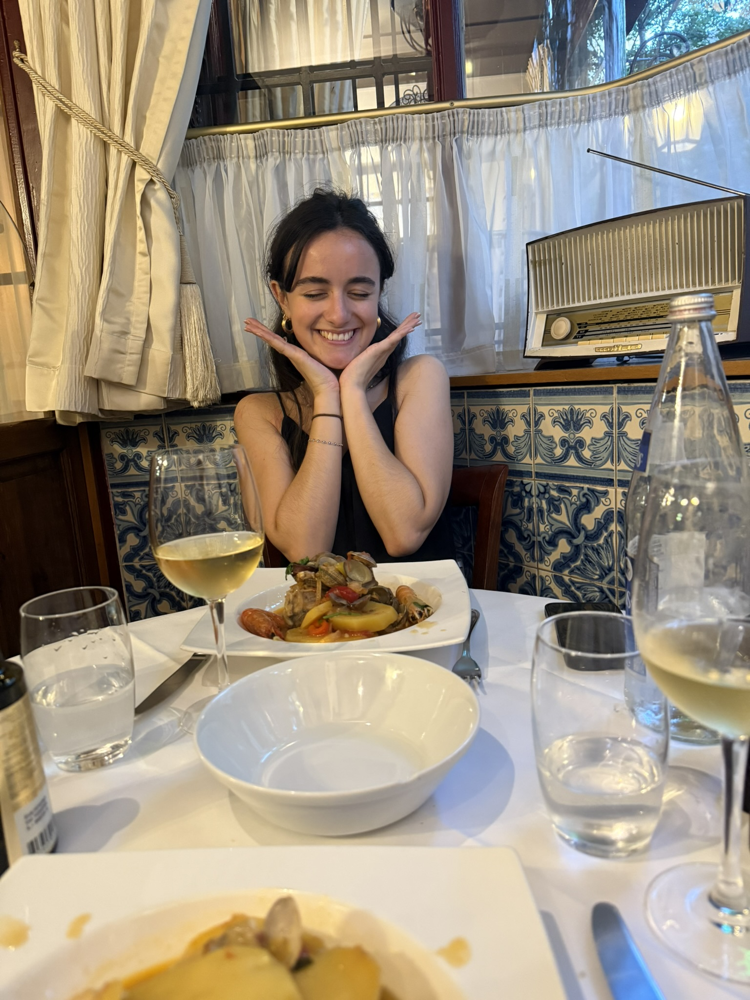
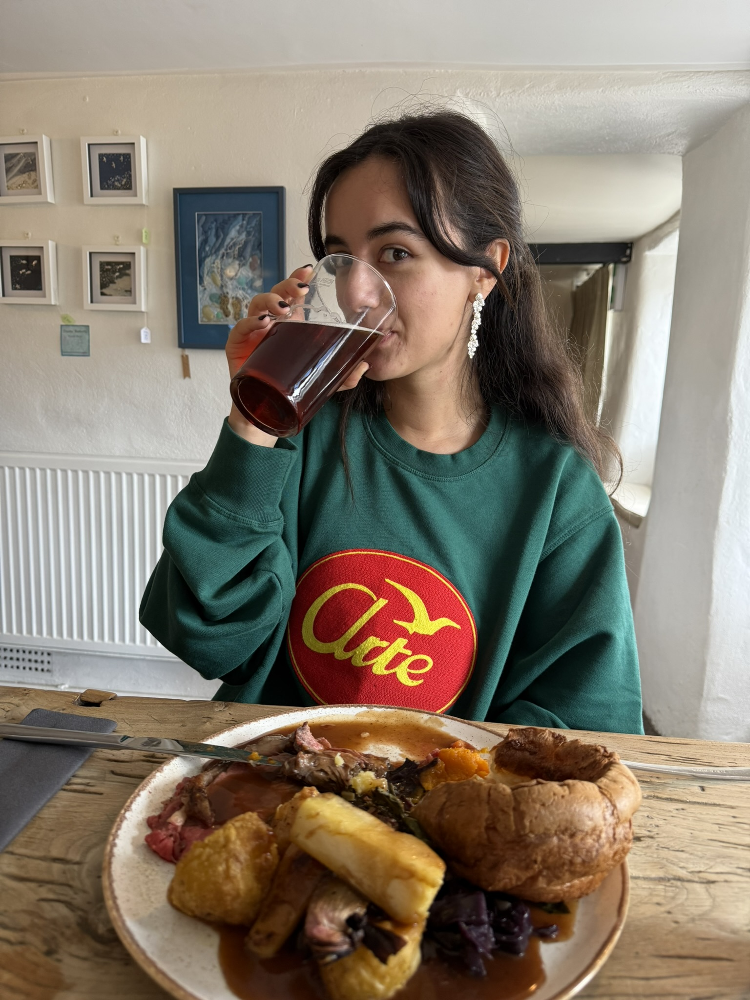
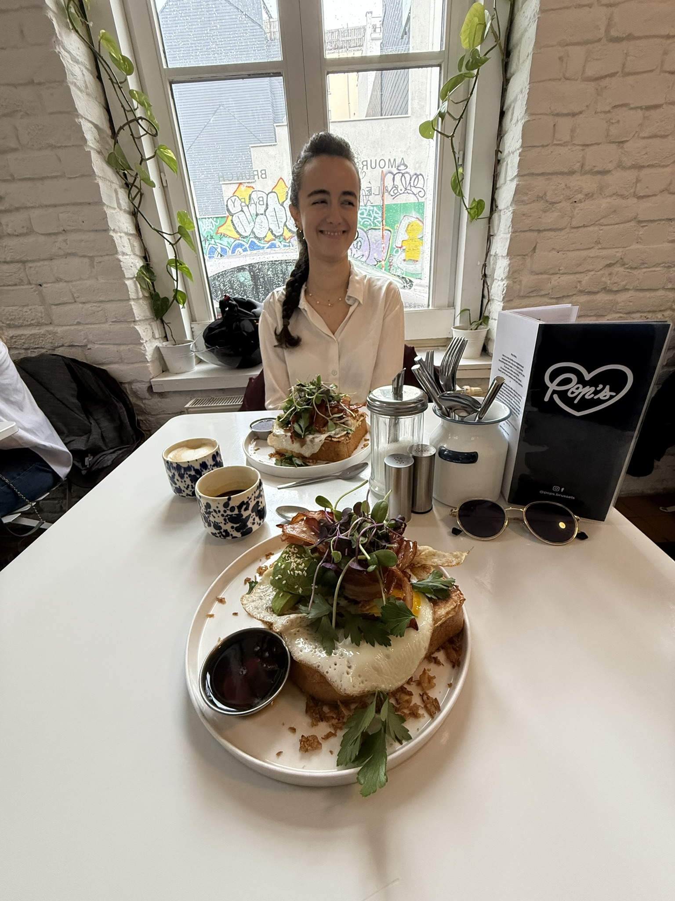
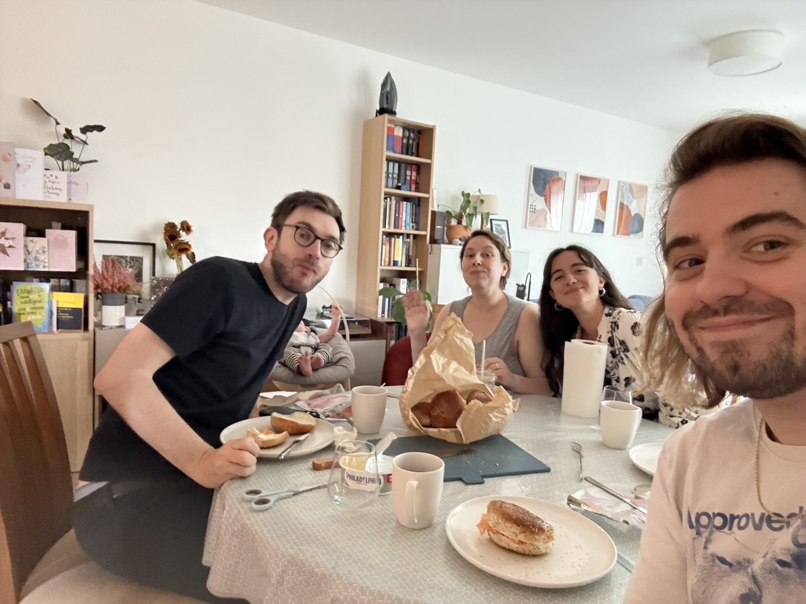
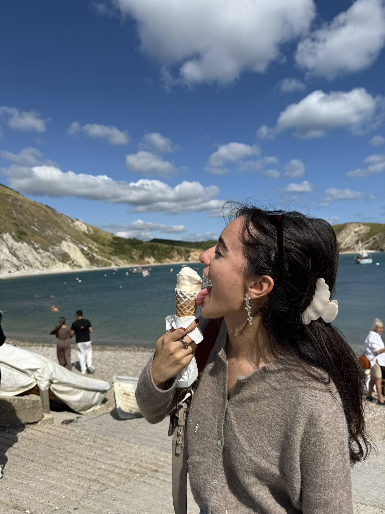
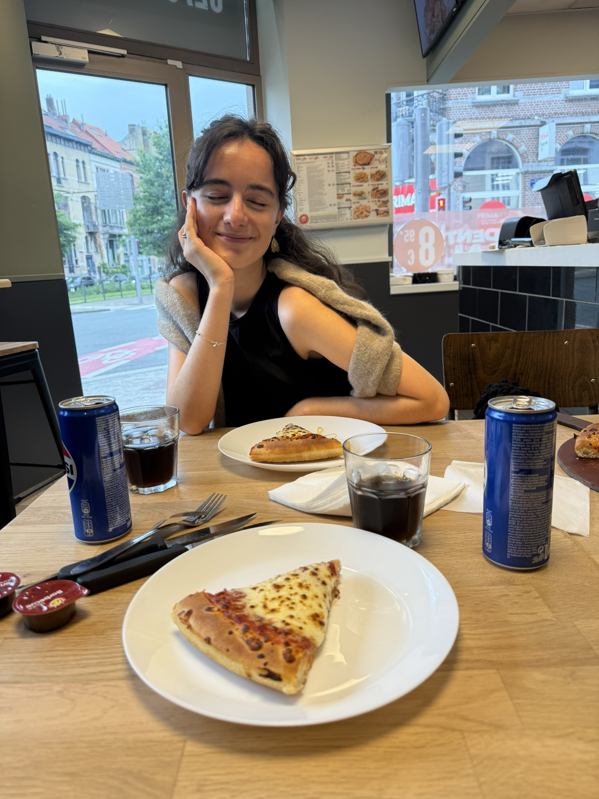

And SO much good food 🤤
We've eaten at lots of great spots - from Portuguese in Brussels to the Sailor's Return
 Que bom! Honestly hard to pick a favourite but our Sailor's Return first lunch in Lulworth was just so cute xxx
We've had loads of great brunches, but weirdly in making this I've realised I don't have too many photos of them. Something to address!
 I suppose technically the one with Michael and Ari wasn't brunch but it was bagels and coffee so that's close enough!
Many lil bites...
 Pizza Hut was better than it gets credit for smh...
That's the end of the website! Took me all day and I know it's basic but I'm pleased with it. It's also just cute to look at our photos and decide what to include lol. If you want to go back to the home page for any reason, click here.